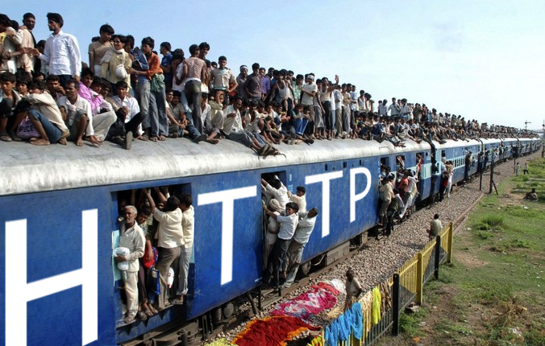

slides: karlovi.ch/solit2015

Промедление смерти подобно
Agenda
- Применение realtime
- Обзор технологий и инструментов
- Подробнее о веб-сокетах
- HTTP 2.0 / SPDY
Биржевая и финансовая информация

Успех
Односекундное промедление
Спортивные события, ставки онлайн

Реальная история
Онлайн-игры
Соцсети, чаты
Collaboration stuff

Инструмент = Транспорт = HTTP
Polling. 2013

Polling в жизни
COMET
COMET
- Long Polling
- Бесконечный фрейм
- Http streaming
- Flash-объекты
- Java-апплеты
GIF-файл
Бесконечный GIF

Рубрика “No comments”
<meta http-equiv="refresh" content="60">
setInterval(function () {
location.reload();
}, 6000);
Realtime in HTML5
- Web RTC
- Server-Sent Events
- WebSockets протокол & API
WebSocket API
Пример
var socket = new WebSocket('ws://solit.nodejitsu.com');
socket.onopen = function () {
console.log('Соединение открыто.');
socket.send(JSON.stringify({ token: 'bVfr4' }));
};
onmessage
socket.onmessage = function (response) {
var data = JSON.parse(response.data);
switch (data.message) {
case "image":
painter.drawImage(data.data);
break;
case "draw":
painter.draw(data.data);
break;
}
};
send
painter.onDraw = function (data) {
socket.send(JSON.stringify({
message: "draw",
data: data
}));
};
2015
f12 - Dev Tools
Frames
Поддержка: клиенты
Поддержка: серверы
ДЕМО


1991

Тим Бернерс Ли, 2014

Latency as a Performance Bottleneck

http://caniuse.com/#feat=spdy
http2://www.рогаикопыта.com
spdy://www.рогаикопыта.com
SPDY live demo
SPDY_SESSION www.google.com:443
SPDY_SESSION www.twitter.com:443
SPDY_SESSION vk.com:443
SPDY_SESSION www.facebook.com:443
SPDY_SESSION www.odnoklassniki.ru
http заголовки
размер ~1kb
http компрессия (GZIP)
http2 компрессия (GZIP) - YES
Мультиплексирование
Спрайты
Спрайты
Зачем?
1.Уменьшить задержку
2. Обойти ограничение одновременных tcp-соединений
Мультиплексирование
SERVER PUSH
<head>
<link href="theme.css">
</head>
<body>
<script src="ak.js"></script>
</body>
http2: Приоритет запросов
Как включить http2

+ поставить расширение для веб-сервера
Персоналии
Илья Григорик. Twitter: @igrigorik
Online версия
Полезные ссылки
Сайты с http2Спецификации